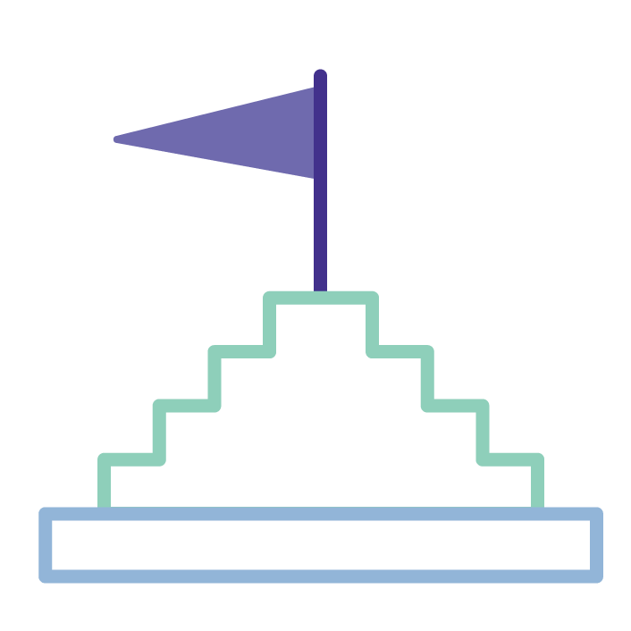

← All work
Iconography · Illustration · Web
·
BUCK Design · Facebook · 2019
Facebook
Libra
Web design, iconography, and illustration for Facebook's global cryptocurrency initiative — designed and shipped at BUCK Design over three months in 2019.
Overview
Building a visual identity for a new kind of money
In 2019, Facebook announced Libra — a global cryptocurrency backed by a reserve of assets, designed to enable simple, low-cost financial transactions for anyone with a smartphone. The scale of the ambition demanded a visual identity to match: a website, a comprehensive icon system, and a set of editorial illustrations explaining the technology to a global audience.
Working at BUCK Design as UI/UX Designer, I contributed across the full visual scope of the project — from the motion-forward homepage experience to the icon library and supporting illustrations used across libra.org. The project was later rebranded as Diem in 2020, for which I also produced motion and visual assets.
BUCK
Developed in collaboration with
BUCK Design — a creative studio known for brand, motion, and digital work at the intersection of design and technology.
Iconography
A custom icon system for a global product
The Libra icon set was built to communicate complex financial and technical concepts clearly and accessibly. Each icon was designed on a consistent grid with careful attention to weight, optical balance, and legibility at small sizes — supporting both the website and any downstream product surfaces.

Full Libra icon set — designed on a consistent grid for use across libra.org and product surfaces. Weight, optical balance, and legibility were primary considerations.
✨
Upload img-libra-icons-load.gif '">
Icon load animation — a staggered entrance sequence giving the icon set motion and personality on page load.
Web Design
Motion-forward web experience
The libra.org homepage and white papers section were designed to make dense technical content feel approachable. Animated transitions, scroll-triggered reveals, and a clean typographic system gave the site a modern, trustworthy feel appropriate for a global financial product.
White papers section — animated content reveals and a typographic system designed to make technical documentation feel clear and credible.
Illustration
Editorial illustrations explaining the technology
Four hero illustrations were created to explain the core pillars of the Libra ecosystem — vision, blockchain infrastructure, reserve backing, and the role of the Libra Association. Each one needed to be technically accurate, globally legible, and visually consistent with the broader Libra brand.

Vision — Libra's mission to provide financial access to everyone.

Blockchain — the distributed ledger technology underlying Libra.

Reserve — the asset-backed reserve model that stabilizes Libra's value.

🤝
Upload img-libra-role.webp '">
Role — the governance structure of the Libra Association.
Diem
Rebrand — Libra becomes Diem
In December 2020, the Libra Association rebranded as the Diem Association, with an updated visual identity and renewed focus. I produced visual assets and motion graphics for the rebrand rollout — including this statistics explainer video, where I generated the majority of the visual elements.
Work completed at BUCK Design, Oct 2018 – Feb 2019, with additional Diem rebrand motion work in Dec 2020. Originally at libra.org, later rebranded as the Diem Association.